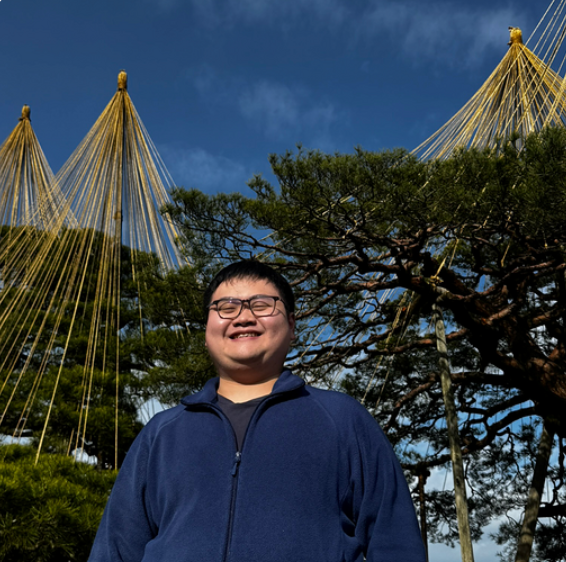

奈良先端科学技術大学院大学 (NAIST) | 修士課程 Nara Institute of Science and Technology (NAIST) | Master's Program

ソフトウェア工学と大規模言語モデル（LLM）の応用に興味を持っています。 特に、LLMを活用したコード解析・バグ検出・自動プログラム修復の研究に取り組んでいます。
I am interested in software engineering and the application of large language models (LLMs). My research focuses on code analysis, bug detection, and automated program repair using LLMs.
| 2026/04 – 現在Present |
奈良先端科学技術大学院大学（NAIST）
情報科学領域 修士課程 | ソフトウェア工学研究室
Nara Institute of Science and Technology (NAIST)
Division of Information Science, Master's Program | Software Engineering Lab |
| 2022/04 – 2026/03 |
福井工業大学
工学部 電気電子工学科 学士 | 大下研究室
Fukui University of Technology
Faculty of Engineering, Dept. of Electrical & Electronic Engineering, B.Eng. | Oshita Lab |
| 2020/10 – 2022/03 |
ABK学館日本語学校
一般課程（進学・就職・生活・資格取得等）
ABK Gakkan Japanese Language School
General Course (University Preparation, Employment, etc.) |
| 2017/01 – 2019/12 |
Jit Sin Independent High School（日新獨立中學）
商業科（Business Stream）
Jit Sin Independent High School (日新獨立中學)
Business Stream |
| IT | 基本情報技術者 Fundamental Information Technology Engineer (FE Exam) |
| 英語English | TOEIC 805 |
| 日本語Japanese | 日本語能力試験 N1 Japanese Language Proficiency Test N1 (JLPT N1) |
大規模言語モデル（LLM）をソフトウェア工学タスクに応用する研究を行っています。 現在の主なテーマは以下の通りです：
I conduct research on applying large language models (LLMs) to software engineering tasks. My current main research topics are:
※ 論文が出たら追加予定 * To be updated when papers are published.
| 2025 |
電子情報通信学会 北陸支部 優秀学生賞
IEICE Hokuriku Branch Outstanding Student Award
IEICE Hokuriku Branch Outstanding Student Award
The Institute of Electronics, Information and Communication Engineers |
| 2025 |
ロータリー米山記念奨学金
Rotary Yoneyama Memorial Scholarship
Rotary Yoneyama Memorial Scholarship
Rotary Club of Japan |
| メールEmail | andrew.wong_wey_chee.au4@naist.ac.jp |
| 所属Affiliation | 奈良先端科学技術大学院大学 Nara Institute of Science and Technology (NAIST) |